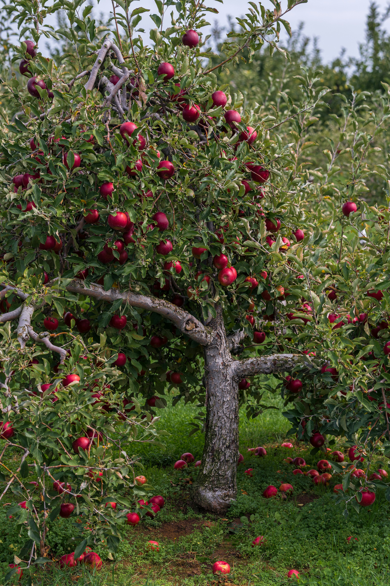
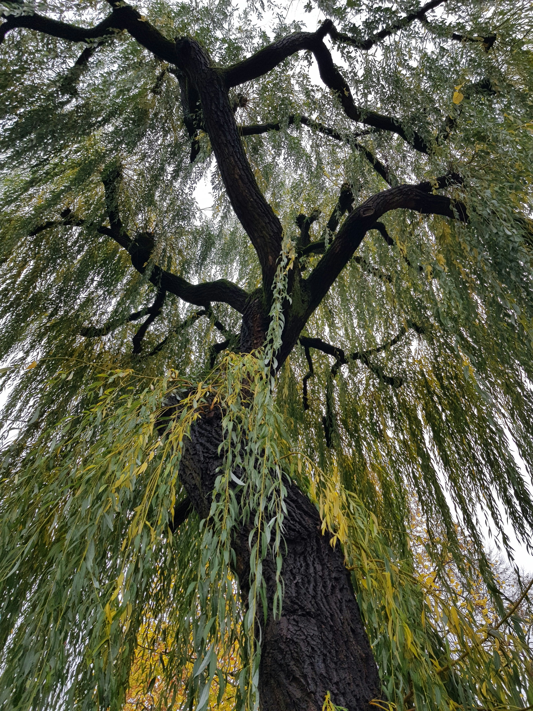
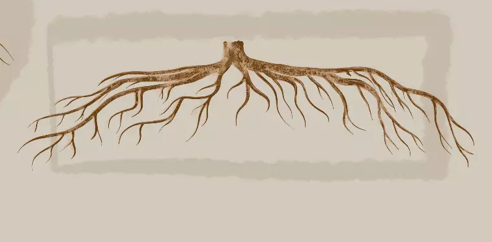
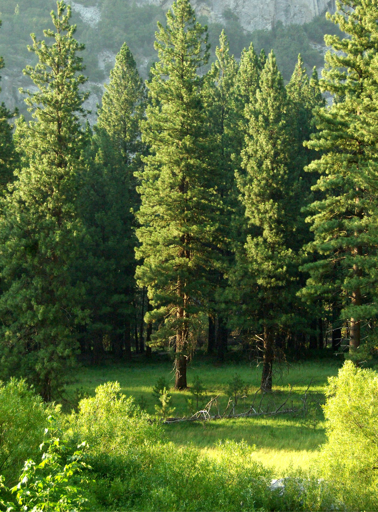
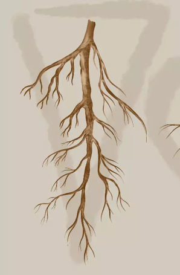
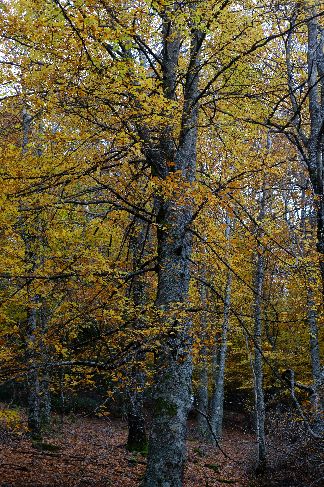
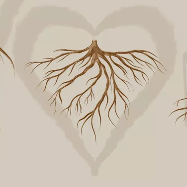

Have you ever looked at a tree and wondered what lies beneath the ground? While every tree has roots, not all root systems are the same. Explore this gallery to discover different tree species and the root types they develop.






